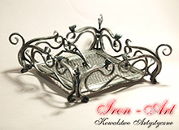
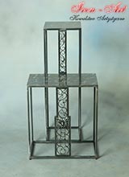
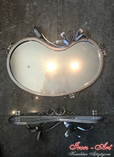
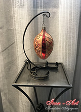
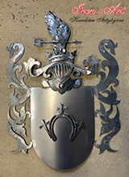
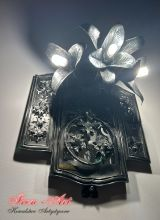
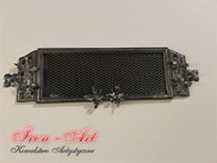

Wystrój wnętrz - przedmioty kute









Nasz zespól pracujący w pracowni kowalstwa artystycznego, oferuje Państwu elementy do wystroju wnętrz.
W asortymencie naszego sklepu znajdą Państwo ozdobne kinkiety kute, artystycznie zdobione stojaki na szable, żyrandole kute, ozdobne drzwi do spiżarni, ozdobne kute ramy luster, kute elementy ozdobne typu róże, kute półki z wieszakami, kute elementy ozdobne z kwiatami typu lilie, kute świeczniki, elementy ozdobne typu winorośl.
Zapraszamy do zapoznania się z produktami kowalstwa artystycznego, oferowanymi na naszej stronie oraz do zapoznania się z cenami poszczególnych wyrobów.
Zachęcamy także do odwiedzenia nas w Łodzi przy ulicy Brzezińskiej 38.